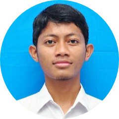

|  |
Muhammad A. MuchtarA Studenthaving traveled to some countries and undesrstanding of different cultures. I have very good communicationn and interpersonal skills and I enjoy working with a variety of people from all backgrounds. |
| Sept 2019 - Current | Faculty of Art and Humanities King Abdulaziz University |
| Jan 2018 - Sept 2019 | Arabic Language Institute for Speaker of Other Language King Abdulaziz University |
| Sept 2019 - Current |
PPMI Jeddah (CHAIRMAN) Responsible to maintain the coheviness and solidarity between students, ensuring events organized properly, and correpondence with other Indonesian student in Saudi Arabia and institutions, such as Indonesian Consulate |
| Jun 2019 - Current |
PPMI Arab Saudi (Social and Sport Division) Organizing sociall events in Indonesia and Sport competition between Indonesian students in Saudi Arabia |
| Dec 2016 - Jun 2017 |
Namira Mosque Foundation (Teacher) Teaching Quran to neighbohood children at afternoon class. located in lamongan, East Java |
| Aug 2015 - Jun 2016 |
Al Kautsar Primary and Junior High School (Teacher) One year volunteer at islamic boarding school in remote area in Padang, West Sumatra. Teaching various subject especially related to islamic religion and also being guardian for students |
| Web Development | ⭐️⭐️⭐️⭐️⭐️ |
| Android Developer | ⭐️⭐️⭐️⭐️⭐️ |